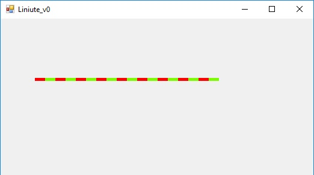
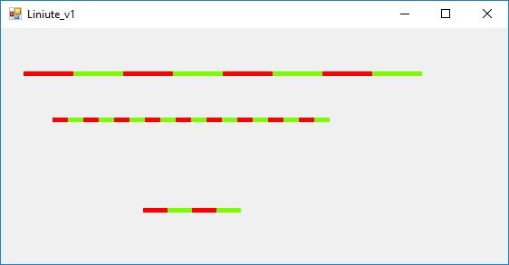
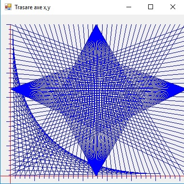
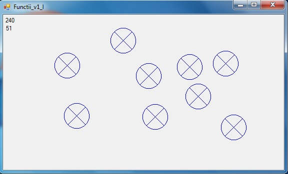
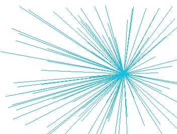
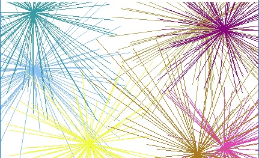

Teme program
Functii
- Realizati o aplicatie care foloseste o functie pentru a afisa numerele pare
- Realizati o aplicatie care foloseste o functie pentru a afisa numerele pare. Se va defini prototipul functiei
- Realizati un program care apeleaza o functie pentru a afisa numerele naturale de la 0 la 100 pe 5 coloane.
- Modificati programul anterior astfel incat functia main sa apara in program inaintea functiei. Se va utiliza prototipul functiei.
- Modificati functia anterioara astfel incat ea sa fie apelata cu un parametru, astfel afisarea sa se faca pana la un numar dat nu pana la 100.
- Se vor introduce 2 parametri astfel afisarea sa se faca de la un numar dat pana la un alt numar dat.
- Se vor introduce 3 parametri astfel afisarea sa se faca de la un numar dat pana la un alt numar dat pe un numar dat de coloane.
- Se reia aplicatia anterioara, si se modifica astfel incat functia sa returneze numarul de caractere afisate
- Folosind transmiterea parametrilor prin referinta, se vor returna 2 parametri: numarul de numere afisate si suma lor
- Realizati un program care utilizeaza o functie pentru a calcula suma numerelor naturale din intervalul n1,n2
- Realizati un program care utilizeaza o functie pentru a calcula numarul de numere naturale divizibile cu 7 din intervalul n1,n2
- Realizati un program care utilizeaza o functie pentru a calcula media numerelor naturale din intervalul n1,n2
- Realizati un program care utilizeaza o functie recursiva pentru a calcula suma numerelor din intervalul n1,n2
- Realizati un program care utilizeaza o functie recursiva pentru a calcula media aritmetica numerelor din intervalul n1,n2
- Realizati o aplicatie care afiseaza meniul de jos si foloseste functii pentru realizarea fiecarei optiuni in parte.
- 1. Afisarea numerelor pare pana la n(n citit de la tastatura
- 2. Calculeaza minimul din n nr intregi citite de la tastatura
- 3. Afiseaza toate nr de 5 cifre divizibile cu m si n citite de la tastatura
- 4. IESIRE
- Realizati un program care apleaza functii ce utilizeaza variabile statice.
- Realizati o aplicatie grafica de forma imaginii de mai jos, in care se defineste o functie ce deseneaza o linie intrerupta de forma:

- Realizati o aplicatie grafica de forma imaginii de mai jos, in care se defineste o functie care se apeleaza de mai multe ori pentru a afisa:

- Realizati o aplicatie grafica de forma imaginii de mai jos, in care se defineste o functie ce deseneaza formele geometrice de mai jos:

se va apela functia pe mai multe evenimente
- Realizati in WFA o functie care deseneaza un cerc sectionat in 4

- Realizati in WFA o aplicatie care deseneaza un cerc sectionat in 4 la pozitia in care se face click intr-un form
- Realizati in WFA o functie care deseneaza imaginea de jos. Coordonatele punctului central se trimit functiei prin parametrii

- Utilizand functia anterioara realizati aplicatia din imaginea de jos.

- Creati dinamica pentru a simula un foc de artificii.